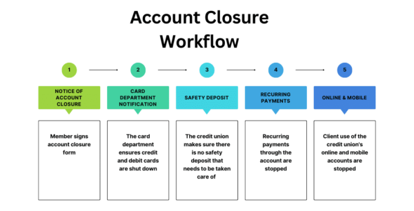

Your trusted source for analytics, automation, and big data insights in financial technology and beyond.

AMOCO Federal Credit Union is identifying internal processes that will benefit from workflow automation built by software company IMM.

How automation technologies and human talent can work together to create more efficient and equitable gig economy workflows.

An in-depth look at how data overload and too many analytical options can paradoxically undermine decision quality.

Exploring the evolution from predictive to prescriptive and autonomous analytics — and what it means for modern business.